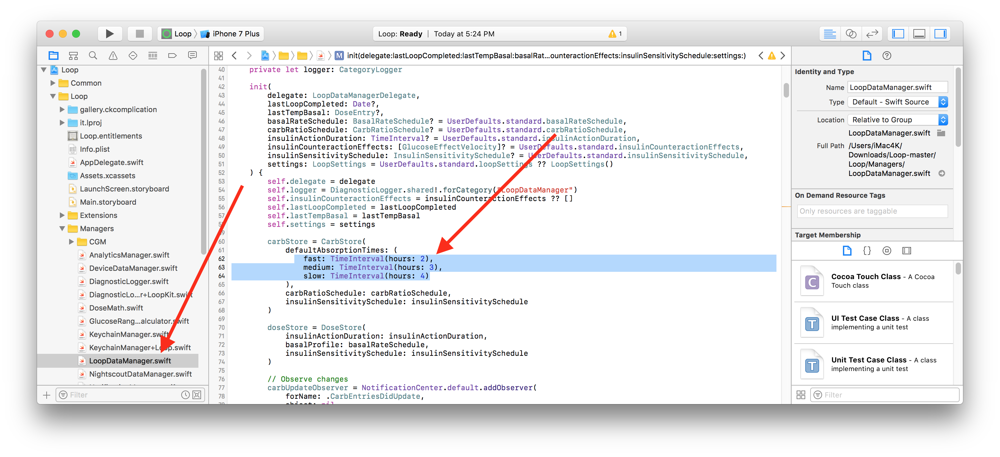

Code Customizations⌁
Based on Loop users’ experience, there are some customizations that you may want to incorporate ahead of building your Loop app and Apple Watch app. These customizations must be done prior to building the Loop app onto your iPhone, they cannot be done from within the app itself.
Note: Every effort will be made to update the line numbers as the code is updated, but there may be times where the screenshots and line numbers are slightly different than the current version of Loop code. These instructions have been updated for Loop v1.9.4.
Disable Authentication for Bolusing⌁
Depending on your iPhone preferences and model, you may have Face ID or Touch ID enabled. Those security features will also be used to authenticate bolus delivery in Loop. You can choose to disable authentication (i.e., not require Face ID, Touch ID, or passcode for bolusing) through the following code customization:
Modify Line 191 in the Loop>>View Controllers>>BolusViewController.swift. Add the false && as shown in the screenshot below:

Workout Range Duration⌁
 If you’d like more than just the standard 1 or 2-hour duration for the Workout Range, you can add or modify the code to add another time interval or edit the existing ones.
If you’d like more than just the standard 1 or 2-hour duration for the Workout Range, you can add or modify the code to add another time interval or edit the existing ones.
Go to the Loop>>Extensions>>UIAlertController.swift and modify Line 32. The default has 1 and 2 hours as shown where the arrow is pointing in the screenshot. You can edit those to whatever duration you want (in units of hours) and add a duration if you prefer. If you’d like 1, 2, and 3 hours options...simply edit the numbers in the brackets to read [1, 2, 3]. It is possible to enter less than 1-hour intervals such as 15 min, 30 min, 45 min by editing the brackets to read [0.25, 0.5, 0.75].

Default Carb Absorption Times⌁

Loop’s default carb absorption times are based on the high, medium, and low glycemic index absorption curves presented in Think Like A Pancreas by Gary Scheiner. Currently the lollipop icon is set for 2 hours, taco icon for 3 hours, and pizza icon for 4 hours.
You can modify these defaults to suit your needs, however modification of these values is not as helpful/common as previous Loop versions. Since Loop v1.4, Loop has included dynamic carb absorption means that Loop will start with your entered carb absorption time (initially multiplying the absorption time by 1.5 to help give an margin of error), and then dynamically adjust the observed absorption time (either shorter or longer) based on the observed BG impacts. So, typically, most people are finding that modification of the default carb absorption times is no longer necessary.
If you would like to modify those defaults, you can do so in the Loop>>Managers>>LoopDataManager.swift Lines 65-67. Note the times are in hours, not minutes, in the code. For Omnipod-testing branch users, this code is instead found in Loop Core >> LoopSettings.swift Line 16.

Exponential Insulin Curve⌁
The Exponential Insulin Curve Models (Rapid-Acting Adult, Rapid-Acting Child, and Fiasp) default to an insulin duration of 360 minutes...but the peak activity of the various curves differs, as follows:
- Rapid-acting adult curve peaks at 75 minutes
- Rapid-acting child curve peaks at 65 minutes
- Fiasp peaks curve peaks at 55 minutes
If you wish to customize these values, you can adjust them on Lines 22-38 in the Common>>Models>>Insulin>>ExponentialInsulinModelPreset.swift file.
For Omnipod-testing branch users, this code is instead found in LoopCore>>Insulin>>ExponentialInsulinModelPreset.swift.

Loop Logo⌁
If you want an app logo other than the default green circle for your Loop app, you can easily customize this. To make it easy to generate the correct sizes of icons, you can use a site like appicon.build and just drag and drop your source image. The source image needs to be 1024 pixels x 1024 pixels. The site will email you a zip file. Double click the zip file, choose the “ios” folder, and copy the contents of the Appicon.appiconset as shown highlighted below.

Now navigate to the corresponding Loop folder as shown below. Replace the contents of the Appicon.appiconset with your copied images.

You can confirm the successful change by looking in Xcode. You should see your custom logo in the Appicon set now. You will also likely see a yellow alert that there are “unassigned children”. This alert will not prevent your app from building, it’s simply because the zip file contained more sizes of images than Loop app uses. You can just leave the unassigned images as is.

Apple Watch Customizations⌁
Recommended Bolus Autofill⌁
The Apple Watch's default is to auto-fill to 75% of the recommended bolus. If you wish, you can customize so that the watch auto-fills a different percentage. To do this, the multiplier can be changed from 0.75 to a value of your choice. A value of 1 will autofill 100% of the recommended bolus. A value of 0 will autofill 0% of the recommended bolus. Go to the Watchapp Extension>>Controllers>>BolusInterfaceController.swift. Edit the section of line 96 for your customization.

Adjust the sensitivity of digital crown for carb and bolus entry⌁
The rate of change of the carb and bolus entry pickers when using the digital crown can be altered. You'll need to edit two lines in files within the WatchApp Extension>>Controllers folder. In BolusInterfaceController.swift edit line 174, and in AddCarbsInterfaceController.swift edit line 215. The 1/24 value is the ratio of rotations of the crown to the amount of change in the value. Changing it to 1/12 would mean that twice as many turns would be needed for the same amount of carb or bolus entry.